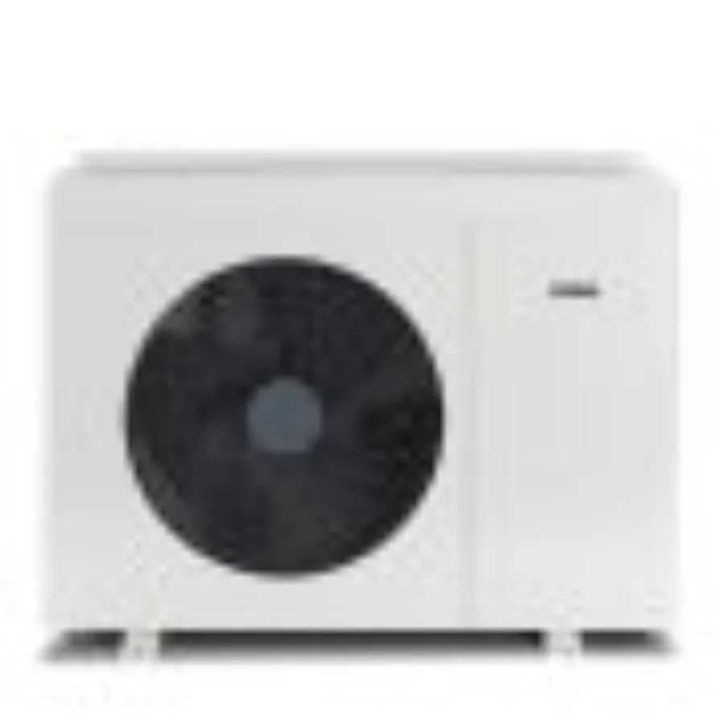

ATAG ENERGION M Hybrid

foto: ATAGHybride warmtepomp (werkt samen met je cv-ketel) · prijzen voor: ENERGION M Hybrid Zone 50 (5 kW)
Specificaties
| Type | Hybride (naast de cv-ketel) |
|---|---|
| Vermogen | 5 kW koude dag |
| Rendement (SCOP) | hangt naast de bestaande cv-ketel; ATAG stuurt beide aan via de ATAG One-thermostaat |
| Koudemiddel | R32 |
| Warm tapwater | via de cv-ketel |
| ISDE-subsidie | € 2.350 bij meldcode KA21380 op de meldcodelijst van RVO |
De ISDE-subsidie loopt per goedgekeurd apparaat, elk met een eigen meldcode. Ik vermeld die meldcode bewust niet: RVO werkt de lijst regelmatig bij en één model heeft vaak meerdere codes per vermogensvariant. Zoek de juiste meldcode op met deze gegevens van deze warmtepomp:
- Merk: ATAG
- Model: ENERGION M Hybrid
- Uitvoering: hybride
- Vermogen: 5 kW (variant: ENERGION M Hybrid Zone 50 (5 kW))
Zoek dit apparaat op de apparatenlijst bij RVO. De meldcode en het exacte subsidiebedrag daar zijn leidend.
Slim koppelen (Koppel-score 3/6)
- Slimme aansturing 1/2
- Aansturing via OpenTherm samen met de cv-ketel en de ATAG One-thermostaat; geen open lokale API of Modbus voor derden.
- Home Assistant 1/2
- Geen integratie voor de warmtepomp zelf; de ATAG One-thermostaat heeft wel een officiele integratie, en voor de ENERGION bestaat een community-integratie via het Ariston-platform.
- Homey 1/2
- Geen eigen app voor de warmtepomp; de ATAG One 2.0-app in de Homey Community Store stuurt de thermostaat aan.
Integraties veranderen per firmware- en appversie; controleer de actuele status vóór aankoop. Zo werkt de Koppel-score
Prijs
laagste prijs, bij CV Totaal
los toestel, excl. installatie; werkt samen met de cv-ketel
- CV Totaal€ 4.275 bekijk
Prijzen gecontroleerd: 1 september 2026. Zonder controledatum is de prijs een indicatie.
Bekijk aanbieding Bereken je terugverdientijd Past deze pomp bij mijn huis?
Ook in andere maten
Deze reeks staat in 4 uitvoeringen op de meldcodelijst van RVO. Het vermogen hieronder is het opgegeven vermogen volgens EU 811/2013, zoals RVO dat hanteert; dat ligt vaak een stap lager dan de maat in de modelnaam.
| Vermogen (ISDE-lijst) | ISDE-subsidie | Meldcode |
|---|---|---|
| 5 kW | € 2.350 | KA21379 |
| 7 kW | € 2.800 | KA21381 |
| 10 kW | € 3.475 | KA21382 |
| 11 kW | € 3.700 | KA21383 |
Over de ATAG ENERGION M Hybrid
ATAG ENERGION M Hybrid is een hybride warmtepomp die samenwerkt met je cv-ketel: de pomp doet het gros van de verwarming, de ketel vangt piekkou en warm water op.
Twijfel je nog over het type of het merk? Doe de keuzehulp, of zet deze pomp naast twee andere in de vergelijker (vink "vergelijk" aan op maximaal drie kaarten).